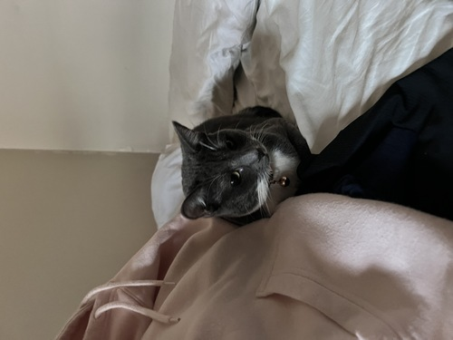
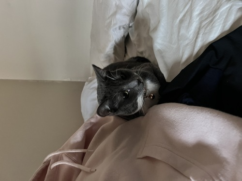

Saniya Brar
Hello! I am an first-year Political Science major at UC Riverside. I have a passion for understanding the intricacies of governance, policy-making, and international relations.
I activly engage in coursework that explores the political systems around the world.
I am developing a strong foundation in critical analysis, research, and communication skills to better myself with essentials for political science. I am activly involved throughout the campus and in my local community back home and am activly seeking volunteering opportunities. I wish to contribute meaningfully to my community and my campus while I am here.
Through my education here at UC Riverside I wish to persue a carrer in public service so I can give back to my community and the people around me!
Experience
Intern at Khair Jakara Movement, Bakersfield California
• Trainging for CPR and Narcan training, Narcan and CPR certified
• Worked on needle exchange sites gave out hygiene packages, food, and clothes
• Tablings at local churches to spread our learnings about the effects of substance abuse
• Went to rehab centers to hear stories of those who have recovered from substance abuse and did surveys
Assistant Store Manager at Countryside Market, Bakersfield, California
• Assisted the store manager in determining and planning staffing needs, recruited store employees, and coordinated shift schedules to ensure appropriate coverage.
• Coordinated daily customer service operations, such as regular sale processes, orders, and payments
• Tracked the progress of weekly, monthy, quarterly, and annual objectives
• Liaised with variour vendors to order and maintain store inventory
• Performed accounts receivable duties, including invoicing, researching chargebacks, discrepancies, and reconcilations
• Maintained the etiquette of store cleanliness to ensure customer satisfaction
Volunteer Work
• Consistent volunteering at Sikh religious and cultural events
• Assist and hosting the annual 5k run to raise awareness and financial donations for community issues
• Participate in women's screenings and free check ups at the local church
Volunteer Work Continued
• Making and handing out care packages to the homeless
• Tabling at the Gurdwara (Sikh Temple)
• Community service, on campus events, and spreading awareness about current day events
Education
UC Riverside
Ridgeview High School in Bakersfield, California
Portfolio


